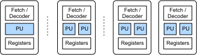
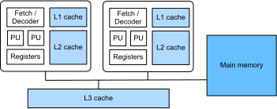

CPU 架构#
在本节中，将简要介绍对 CPU 上的深度学习和科学计算性能至关重要的系统组件。为了进行更全面的调查，推荐 这本经典教科书（textbook）。假设读者了解基本的系统概念，如时钟速率（即 clock rate 或者 频率（frequency））、CPU cycle 和 cache。
算术单元#
Arithmetic Units
典型的通用 CPU 有硬件单元来执行整数（称为 ALU，中文：算术逻辑单元）和浮点数（称为 FPU）上的运算。各种数据类型的性能取决于硬件。让我们先检查一下我们使用的 CPU 型号。
# 下面的代码运行在 Linux 上
!cat /proc/cpuinfo | grep "model name" | head -1
model name : Intel(R) Xeon(R) CPU E5-2678 v3 @ 2.50GHz
现在检查不同数据类型的矩阵乘法的性能。
import numpy as np
def benchmark(dtype):
x = np.random.normal(size=(1000, 1000)).astype(dtype)
%timeit np.dot(x, x)
benchmark('float32')
benchmark('float64')
benchmark('int32')
benchmark('int64')
2.77 ms ± 18 µs per loop (mean ± std. dev. of 7 runs, 100 loops each)
5.99 ms ± 166 µs per loop (mean ± std. dev. of 7 runs, 100 loops each)
1.09 s ± 20 ms per loop (mean ± std. dev. of 7 runs, 1 loop each)
1.1 s ± 4.25 ms per loop (mean ± std. dev. of 7 runs, 1 loop each)
可以看出，32 位浮点（floating-point）(float32) 比 64 位浮点 (floati64) 快 2 倍。整数性能要慢得多，32 位整数 (int32) 和 64 位整数之间没有太大区别。我们将在后面进一步了解这些数字。
然而，有些算子可能比矩阵乘法中使用的乘法和加法 a += b * c 要慢得多。例如，CPU 可能需要数百个周期来计算 transcendental 函数，例如 exp。你可以看到，np.exp(x) 比 np.dot(x, x) 需要的运算少了很多，前者需要更长的时间。
x = np.random.normal(size=(1000, 1000)).astype('float32')
%timeit np.exp(x)
1.54 ms ± 34.5 µs per loop (mean ± std. dev. of 7 runs, 1,000 loops each)
并行执行#
直到 21 世纪初，CPU 频率迅速增加。2003 年，英特尔发布 Pentium 4（奔腾） CPU，时钟频率高达 3.8 GHz。如果检查 CPU 时钟速率，
# 以下代码在 Linux 运行
!lscpu | grep MHz
CPU MHz: 1200.000
CPU max MHz: 3300.0000
CPU min MHz: 1200.0000
可以看到它的时钟速率比 2003 年的产品低，但它可能比奔腾 4 CPU 快 100 倍。秘密来源是，新的 CPU 模型在并行执行领域探索了更多。接下来简要地讨论两种典型的并行化。
SIMD#
单指令多数据流（Single instruction, multiple data，简称 SIMD）是指使用相同指令同时处理多个元素。

Single core vs. single core with SIMD vs. multi-core with SIMD.#
在正常的 CPU 内核中，有指令获取（fetching）和解码（decoding）单元。它在处理单元（processing unit，简称 PU）（例如 ALU 或 FPU）上运行一条指令，每次处理一个元素，例如 float32。使用 SIMD，有多个 PUs 而不是一个。每次读取解码单元都将相同的指令提交给每个 PU 同时执行。如果有 \(n\) PUs，则每次都可以处理 \(n\) 元素。
流行的 SIMD 指令集包括英特尔的 SSE 和 AVX，ARM 的 Neon 和 AMD 的 3DNow!。
查看 CPU SIMD 支持。
# 以下代码在 Linux 运行
!cat /proc/cpuinfo | grep "flags" | head -1
flags : fpu vme de pse tsc msr pae mce cx8 apic sep mtrr pge mca cmov pat pse36 clflush dts acpi mmx fxsr sse sse2 ss ht tm pbe syscall nx pdpe1gb rdtscp lm constant_tsc arch_perfmon pebs bts rep_good nopl xtopology nonstop_tsc cpuid aperfmperf pni pclmulqdq dtes64 monitor ds_cpl vmx smx est tm2 ssse3 sdbg fma cx16 xtpr pdcm pcid dca sse4_1 sse4_2 x2apic movbe popcnt tsc_deadline_timer aes xsave avx f16c rdrand lahf_lm abm cpuid_fault epb invpcid_single pti intel_ppin ssbd ibrs ibpb stibp tpr_shadow vnmi flexpriority ept vpid ept_ad fsgsbase tsc_adjust bmi1 avx2 smep bmi2 erms invpcid cqm xsaveopt cqm_llc cqm_occup_llc dtherm ida arat pln pts md_clear flush_l1d
grep: write error: Broken pipe
cat: write error: Broken pipe
可以看出，支持的最强大的 SIMD 指令集是 AVX-512，它对 AVX 进行了扩展，支持对 512 位宽数据执行 SIMD，例如每次可以执行 16 个 float32 运算或 8 个 float64 运算。
多核#
SIMD 提高了单核的性能，另一种方法是向单个 CPU 处理器添加多个核。
看起来我们的 CPU 有 48 核。
# 以下代码在 Linux 运行
!cat /proc/cpuinfo | grep "model name" | wc -l
48
但是请注意，现代的 Intel CPU 通常有 hyper-threading，即每个核运行 2 个硬件线程。通过超线程化（hyper-threading），每个内核被表示为操作系统的 2 个逻辑内核。所以即使系统显示有 48 核，我们的 CPU 实际上只有 24 核。
让两个线程共享同一个核的资源可能会增加总吞吐量，但会以增加总体延迟为代价。此外，超线程的效果在很大程度上取决于应用程序。因此，一般不建议在深度学习工作负载中利用超线程。在本书后面，您将看到，即使我们的 CPU 有 48 个核，我们也只启动了 24 个线程。
性能#
我们经常使用每秒浮点运算次数（floating point operations per second，即 FLOPS）来衡量硬件平台或可执行程序的性能。
单个 CPU 的理论峰值性能可以通过 #physical_cores * #cycles_per_second * #instructions_per_cycle * #operations_per_instruction 计算。这里 #instructions_per_cycle 被称为 SIMD width。
我们的 CPU 有 24 个物理核，最大的时钟速率（即 #cycles_per_second）是 \(2.5\times 10^9\)，AVX-512 每周期计算 48 个 float32 指令，AVX-512 中的 FMA 指令集每次计算 a += b * c，它包含 2 个运算。因此，单精度 (float32) 的 GFLOPS (gigaFLOPS) 为
2.5 * 24 * 48 * 2
5760.0
您可以根据系统信息修改上述代码，以计算 CPU 峰值性能（peak performance）。
矩阵乘法 (matmul) 是很好的 CPU 峰值性能（peak performance）基准工作负载（benchmark workload），如果所有矩阵的形状为 \([n, n]\)，那么总共有 \(2\times n^3\) 个运算。在执行 matmul 之后，可以通过使用平均执行时间（averaged executing time）除以它的总运算数（operation）来得到它的 (G)FLOPS。可以看出，测量的 GFLOPS 接近峰值性能（近 \(90\%\) 的峰值）。
x = np.random.normal(size=(1000, 1000)).astype('float32')
res = %timeit -o -q np.dot(x, x)
2 * 1000**3 / res.average / 1e9
665.4080305521185
内存子系统#
另一个对性能有显著影响的组件是内存子系统。内存大小是系统的关键规格之一。我们使用的机器内存为 125 GB。
# 以下代码在 Linux 运行
!cat /proc/meminfo | grep MemTotal
MemTotal: 131879180 kB
另一方面，内存带宽（memory bandwidth）很少被注意到，但同样重要。可以使用 mbw 工具来测试带宽。
sudo apt install mbw
# 以下代码在 Linux 运行
!mbw 256 | grep AVG | grep MEMCPY
AVG Method: MEMCPY Elapsed: 0.04695 MiB: 256.00000 Copy: 5452.992 MiB/s
注意，我们的 CPU 每秒可以对 float32 执行 \(5740\times 10^9\) 运算。这要求带宽至少为 \(5740\times 4=22960\) GB/s，这明显大于测量的带宽。CPU 使用 cache 来填补这一巨大的带宽缺口。让我们检查一下 CPU 的 cache。
# 以下代码在 Linux 运行
!lscpu | grep cache
L1d cache: 768 KiB
L1i cache: 768 KiB
L2 cache: 6 MiB
L3 cache: 60 MiB
Vulnerability L1tf: Mitigation; PTE Inversion; VMX conditional cache flushes, SMT vulnerable
可以看到，有三个级别的缓存：L1、L2 和 L3（或 LLC，最后一级缓存）。L1 缓存有 768KB 的指令和 768KB 的数据。L2 缓存要大 8 倍。L3 缓存要大得多，但它仍然比主存（main memory）小数千倍。缓存的好处是显著改善了访问延迟（access latency）和带宽（bandwidth）。通常在现代 CPU 上，访问 L1 缓存的延迟小于 1ns, L2 缓存的延迟约为 7ns, L3 缓存慢一些，大约为 20ns，但仍然比主存的 100ns 的延迟快。

The layout of main memory and caches.#
L1 和 L2 缓存是独家的 CPU core，而 L3 缓存共享相同的 CPU 处理器来处理一些数据，CPU 将首先检查是否存在 L1 缓存的数据，如果没有，再检查 L2 高速缓存，如果没有，再检查 L3 缓存。如果不去主内存检索数据并把它所有的方式通过 L3 缓存，L2 缓存和 L1 缓存，最后到 CPU 寄存器。
这看起来非常昂贵，但幸运的是，在实践中，程序有数据本地模式，这将加快数据检索过程。有两种类型的地方性：temporal locality 和 spatial locality。时间局部性（temporal locality）意味着我们刚刚使用的数据通常将在不久的将来使用，因此它们可能仍然在缓存中。空间局部性（spatial locality）是指我们刚刚使用的相邻数据在不久的将来可能会被使用。
由于系统每次都会将一个值块带到缓存中（参见 缓存线 的概念），当引用这些相邻的数据时，这些数据可能仍然在缓存中。利用数据局部性带来的优势是最重要的性能优化原则之一，我们将在后面详细描述。
小结#
CPU 有专门的单元来处理各种数据类型的计算。CPU 的峰值性能是由时钟速率、内核数和指令集决定的。
CPU 使用多级缓存来弥补 CPU 计算能力和主存带宽之间的差距。
高效的程序应该有效地并行化，并以良好的时间和空间本地化访问数据。